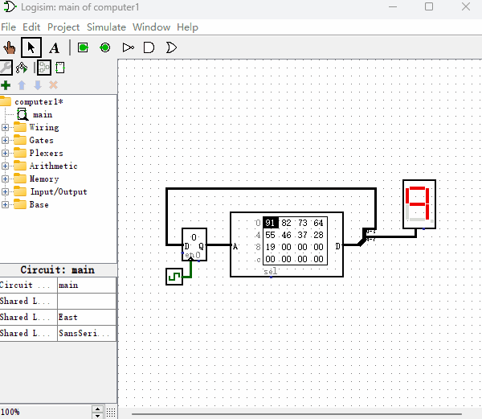

制作一个能够执行指令的计算机
首先，让我们先做一个最简单的计算机，这个计算机完成的功能就是让“十六进制数码管”无限循环的从9倒计时显示到0，每隔一个时钟周期变换一个数字。如下图所示，这个简单的计算机主要由1个4位“触发器”和1个4位输入8位输出“只读存储器（ROM）”组成。ROM输出数据的低4位连接到“触发器”的输入端，ROM输出数据的高4位连接到“十六进制数码管”。

我们先来看看这个“只读存储器（ROM）”存放的是什么数据？如果你比较熟悉Logisim软件的话，那么你可能已经通过图中的“只读存储器（ROM）”界面上看出来存放了什么数据。但是，为了更加直观的观察数据，我把它整理成了一份表格，如下图所示（表格中D0~D7指的是ROM输出端从上至下的第0位到第7位）。
| 地址 | D3~D0 | D7~D4 | 十六进制 |
|---|---|---|---|
| 0000 | 0001 | 1001 | 0x91 |
| 0001 | 0010 | 1000 | 0x82 |
| 0010 | 0011 | 0111 | 0x73 |
| 0011 | 0100 | 0110 | 0x64 |
| 0100 | 0101 | 0101 | 0x55 |
| 0101 | 0110 | 0100 | 0x46 |
| 0110 | 0111 | 0011 | 0x37 |
| 0111 | 1000 | 0010 | 0x28 |
| 1000 | 1001 | 0001 | 0x19 |
| 1001 | 0000 | 0000 | 0x00 |
上图表格中，地址列表示的是数据D7~D0存放到ROM的哪个地址，D3~D0表示的是所存数据的低4位，D7~D4表示的是所存数据的高4位。现在我们来逐步分析下它是如何驱动“十六进制数码管”完成一个从9到0的倒计时功能的。
首先，我们先看看电路首次通电的情况，“时钟信号发生器”默认输出0，由于“触发器”接收不到0变1的控制信号就会维持默认数据，这里我们电路刚通电后，触发器的默认值是0。所以“只读存储器”地址传入0，输出数据为0x91，即二进制的10010001。其中高4位D7~D4为1001，它被传给“十六进制数码管”，因而数码管显示“9”。“只读存储器”输出的低4位D3~D0为0001，它被传给了“触发器”的数据输入端。
当“时钟信号发生器”由0变1后，“触发器”数据输入端的0001被重新保存下来，并输出0001。此刻我们再看“只读存储器”，因为它的址变成了0001，所以它输出数据为0x82，即二进制的10000010。我们知道“十六进制数码管”显示的内容就是“只读存储器”输出数据的高4位，所以此刻“十六进制数码管”显示8，即二进制的1000。“只读存储器”输出的低4位0010再次被传给了“触发器”的数据输入端。
重复第2步。这样我们就实现了“十六进制数码管”从9到0的倒计时的功能！需要注意的是，当“只读存储器”变成1001时，“只读存储器”输出的低4位D3~D0为0000，整个系统又回到了初始状态，即从头循环再来。
说到这里，我们来重新定义几个概念。我们后面用来存储数据的元件主要就是由多位“触发器”来实现的，从使用功能的角度来说，我们也可以称它为“寄存器”。当然寄存器也可以由多位“锁存器”组成，在本书教程里我们主要使用“触发器”来保存数据。另外，“只读存储器”里面的数据我们也可以起个新的名字，叫做“指令”，每一条数据都是一条“指令”。这个计算机就是在指令的控制下完成了“十六进制数码管”倒计时显示数字的功能。注意，在之前的章节我们都是使用鼠标不停的点击“时钟信号发生器”来进行高低电平的切换，其实Logisim软件已经为我们提供了自动切换高低电平的功能，只需在软件的菜单栏点下即可，同时还可以选择高低电平的切换频率。
再回头看这个简单的计算机系统，ROM存放了一堆指令，指令的低4位D3~D0用来控制指令的执行顺序，高4位D7~D4用来控制各种外部的输出状态。而“时钟信号发生器”就像是整个计算机的心脏，每产生一次高低电平就犹如心脏跳动一次，心脏跳动的速度越快，计算机运行的速度也就越快。如果我们想提高这台计算机的运行速度，那么只需要提高“时钟信号发生器”的频率即可。到此，你有没有联想到什么？你是不是在购买电脑或手机的时候，会挑选CPU主频更高一点电脑，因为这种电脑运行速度更快，而这里的CPU主频指的就是电脑的心跳频率，就像这个“时钟信号发生器”一样。